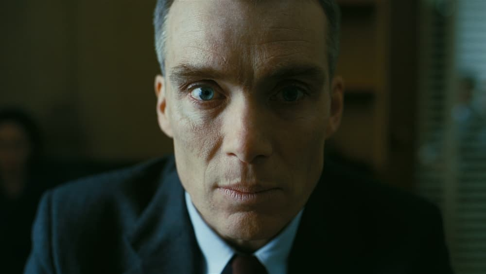

-
Top 5 Performances of 2023
by Mitchel Green - January 11, 2024
|
mitchelgreen34@gmail.com

source: The Movie Database
What makes a great performance? Is it how unique and memorable their line readings are? Is it taking a weak role and elevating it to iconic status? Is it finding perfect balance in complex parts that require shifting tones or dramatic turns in character? Many different things make a great performance, and in 2023 we got not just a lot of great ones, but a lot of variety in approach and execution. I’ve only picked one performance per film so I can talk about as many films as possible, but several performances from the same movie could have potentially made the list had I not picked just one. I’ve also included several honorable mentions below.
Honorable Mentions (Alphabetical By Last Name)
Juliette Binoche (The Taste of Things)
Michael Cera (The Adults)
Penelope Cruz (Ferrari)
Jacob Elordi (Priscilla)
Abby Ryder Fortson (Are You There God? It’s Me, Margaret.)
Paul Giamatti (The Holdovers)
Greta Lee (Past Lives)
Julia Louis-Dreyfus (You Hurt My Feelings)
Holt McCallany (The Iron Claw)
Julianne Moore (May December)
Frank Rogowski (Passages)
Jason Schwartzman (Asteroid City)
Alexander Skarsgård (Infinity Pool)
Emma Stone (Poor Things)
Teyana Taylor (A Thousand and One)
Michelle Williams (Showing Up)
5. Alma Pöysti - “Fallen Leaves”
There’s a brilliant moment in Aki Kaurismäki’s “Fallen Leaves” when the seal finally breaks for Ansa. She has been closed off for so much of the film, but Holappa has finally come back into her life. They’re having dinner at her apartment, and the night is full of unease. They listen to the radio for a bit after dinner, a news report about the war in Ukraine, and finally Ansa snaps. She screams about how fed up she is with that damn war. In a film where everything is underplayed, the sudden outburst of emotion is startling and powerful. She’s not just screaming about the war, but about everything in her life that never goes right. Even the things she thinks will, like her new relationship with Holappa, are full of turmoil. Can’t anybody just have a little bit of happiness in their lives? I could have put either of the lead performances in “Fallen Leaves” on the list, but that scene puts Pöysti over the top for me.
4. Robert De Niro - “Killers of the Flower Moon”
Because of my arbitrary “one performance per movie” rule, Lily Gladstone’s remarkable work as Mollie Burkhart isn’t on the list, and that’s because Robert De Niro is still managing to produce some of his career-best acting well past his legendary prime. De Niro has the toughest role of the three central performances in “Killers of the Flower Moon.” He doesn’t have to shield the evil at the core of the character because Scorsese doesn’t play this story as a mystery as it is in the book. But De Niro does because he has to make us understand why the Osage would trust him in the first place. So he hides that evil behind a folksy, grandfatherly facade. Despite what we know of his true nature, De Niro's character spends most of the film as a pillar of the community. Because De Niro shows flashes of his evil rather than lay it bare all at once, it creates a tension of inevitability. We know exactly what he is going to do to the Osage Nation, and De Niro and Scorsese make us sit in it for as long as possible, unable to do anything to stop it. It’s one of the most sickening performances in recent memory.
3. Sandra Hüller - “Anatomy of a Fall”
I still haven’t concluded whether or not Sandra killed her husband in “Anatomy of a Fall,” and while much of that undoubtedly comes from Justine Triet and Arthur Harari’s brilliantly misdirecting screenplay, Sandra Hüller’s cagey performance is just as important to that uncertainty. Hüller takes her character’s situation and maximizes the sympathy she can elicit from the viewer. She’s not milking it, but she is subtly pressing all the right buttons to get and keep you on her side. And yet, there’s always a nervousness in her speech. It’s not a sign of guilt, given the stress of the situation, but there’s never enough confidence in anything she says to make you believe her. But she still sticks up for herself when being attacked for other parts of her personal life (like her fiction writing) that the prosecutor uses to trash her character. The power in her voice when she pushes back stands in stark contrast to how she’s handled most of the trial, and now you start to shift back to her side.
2. Glenn Howerton - “BlackBerry”
“BlackBerry” is one of my favorite movies of the year, and it hinges entirely on the performance of Glenn Howerton as Jim Balsillie. I don’t have the relationship to Howerton that many who watch “It’s Always Sunny in Philadelphia” might, but that might help his performance here. His brilliance isn’t in how his performance plays off his most famous work, but in how he becomes the full embodiment of high-level MBA hubris, an all-devouring monster demanding infinite growth no matter the costs. Though the film is hilarious, he’s not playing a comic buffoon. He’s playing a horror villain. Howerton is embellishing — he is playing a heightened, dramatized version of a real person — but he is terrifying because he sticks close enough to how a person like this character might act, and it feels believable.
1. Cillian Murphy - “Oppenheimer”
A lot of weight is put on an actor’s shoulders in a close-up. Every tiny movement is magnified, and the scrutiny on your performance intensifies greatly because you are all the viewer sees. Now imagine that same close-up projected in 70mm IMAX on a screen six stories tall. The performance isn’t magnified anymore, it overwhelms. The final shot of Cillian Murphy’s face in “Oppenheimer,” as he has just told Albert Einstein he believes they destroyed the world, is one of the most harrowing images in any film to come out last year. It’s just a simple close-up, and yet it is shot and composed with the same sense of scale as the Trinity test sequence. But the power of that scene, and the whole movie, comes from Murphy’s face. The dead look in his eyes, resigned to the world’s inevitable doom, knowing it’s all his fault.